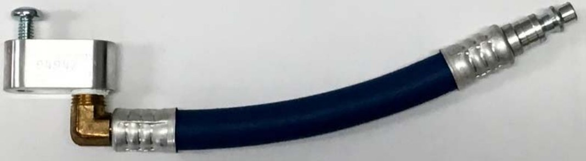
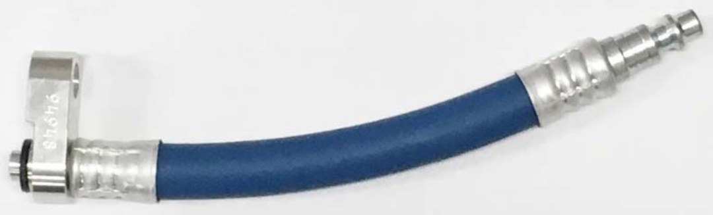
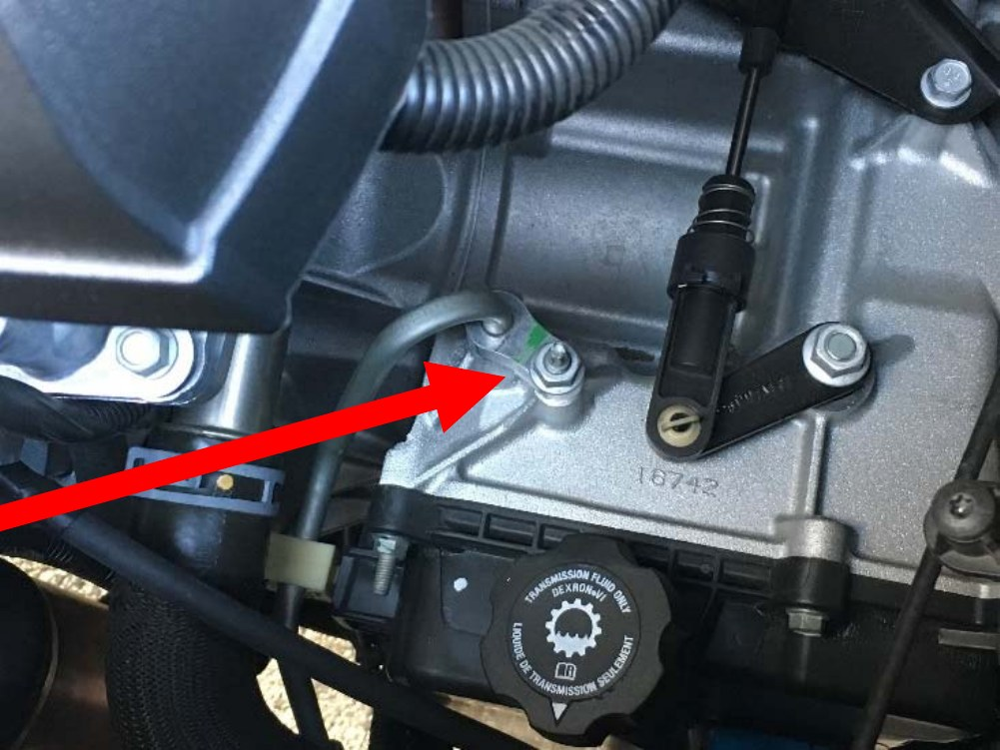

Doc no. MOC-TSB-18-05 // Vol. 18 No. 05 // Apr 16, 2018 // Transmission
GM ATF Adapter
New9494794948
MOC has developed a new set of transmission adapters for use on the GM 6T75, 6T40, and 6T50 transmissions. These adapters are Part No. 94947 and Part No. 94948, respectively. This adapter set connects to the transmission. Applications available for the Chevy Traverse, Cruz, Sonic, and Malibu; GMC Acadia; and Buick Enclave, LaCrosse, and Encore.
What's new
Contact
For more information, contact the Machine & Equipment Department at 866.244.6621.



Part numbers
| Part No. | Description | Notes |
|---|---|---|
| 94947 | Adapter, ATF, GM Female Cooler Line | |
| 94948 | Adapter, ATF, GM Male Cooler Line |